RoboMaster 视觉伺服引擎（rm-engine）
目录
- RoboMaster 视觉伺服引擎（rm-engine）
- 项目背景与目标
- 硬件平台配置
- rm-engine 跨平台引擎框架
- 引擎架构分层
- Premake5 跨平台构建系统
- 多线程模块化运行
- 完整视觉伺服流水线
- Stage 1–2：鱼眼采集与双色彩空间分割
- Stage 3–4：边缘增强与多准则轮廓过滤
- Stage 5：最小包围圆(MEC)关键点提取
- Stage 6：PnP位姿估计与手眼坐标变换
- 解析逆运动学求解器
- 求解算法
- 轨迹插值与串口闭环控制
- 深度学习方案对比分析：为什么回退到传统视觉
- 迭代优化历程
- 端到端性能指标
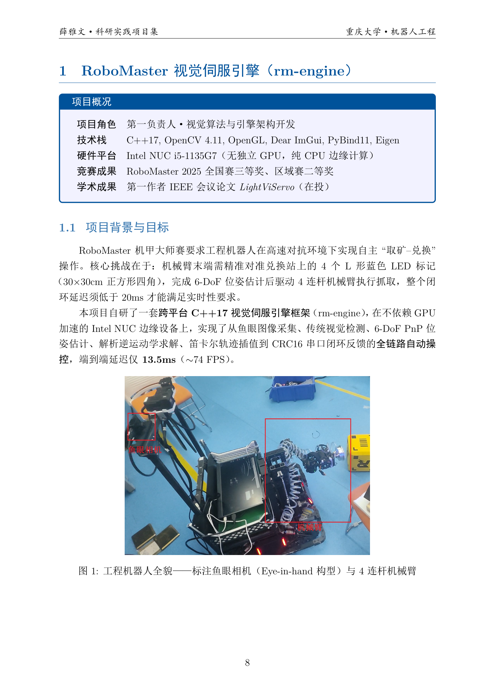
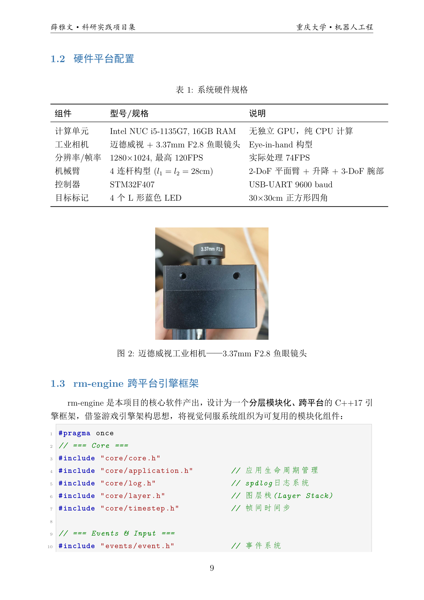
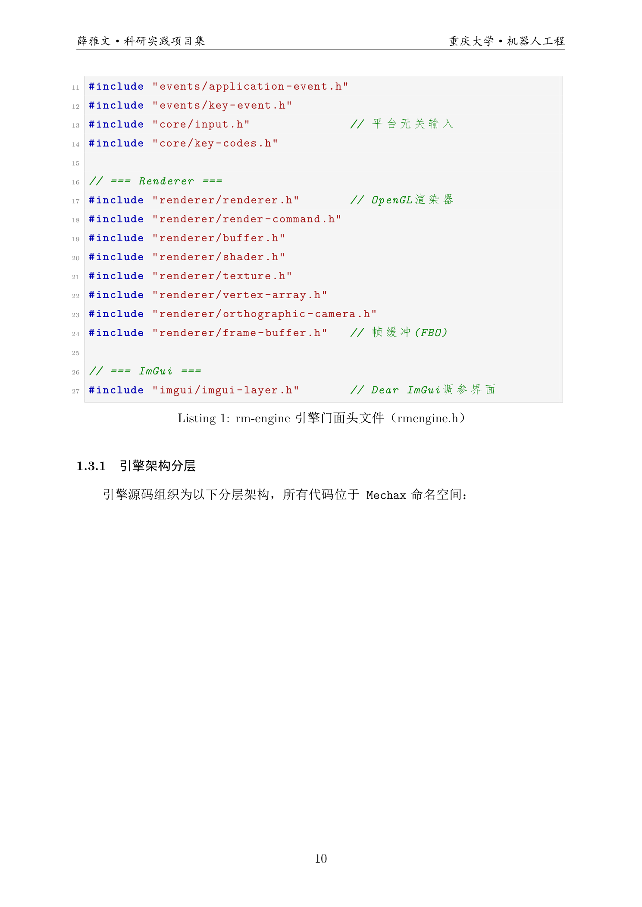
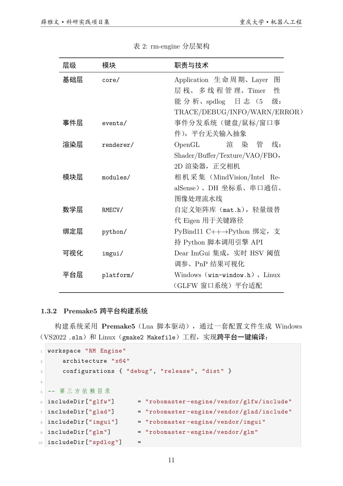
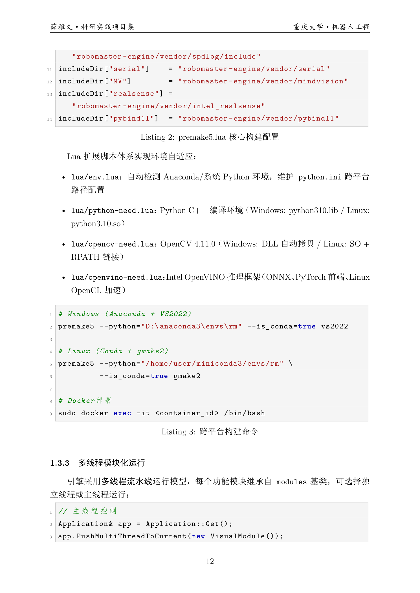
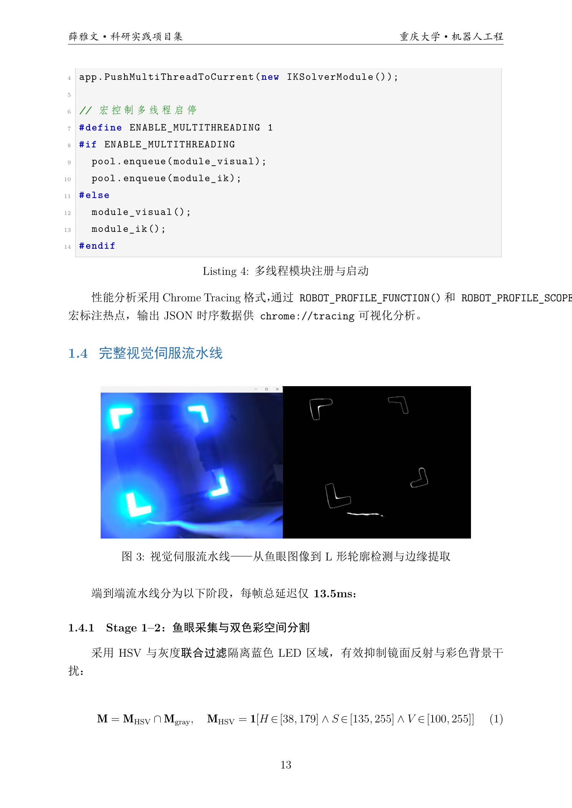
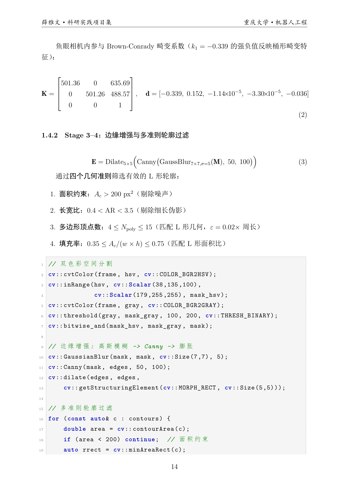
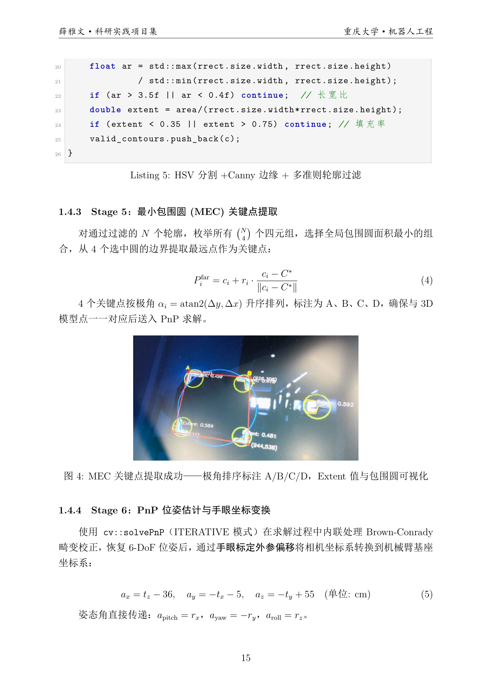
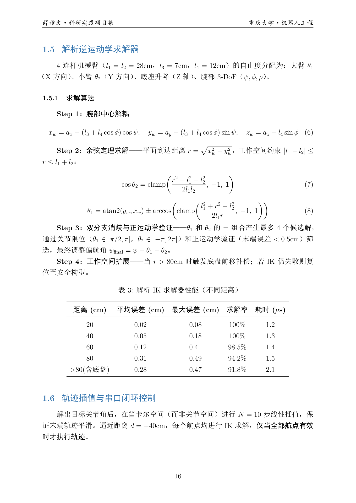
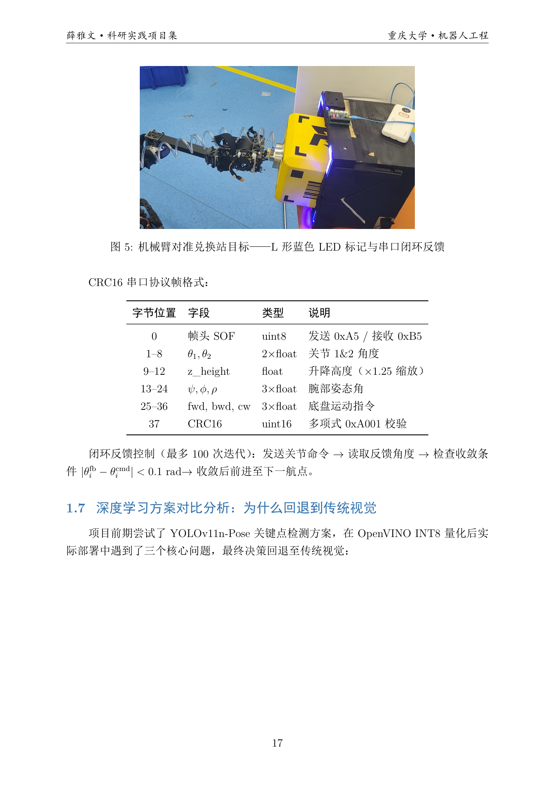
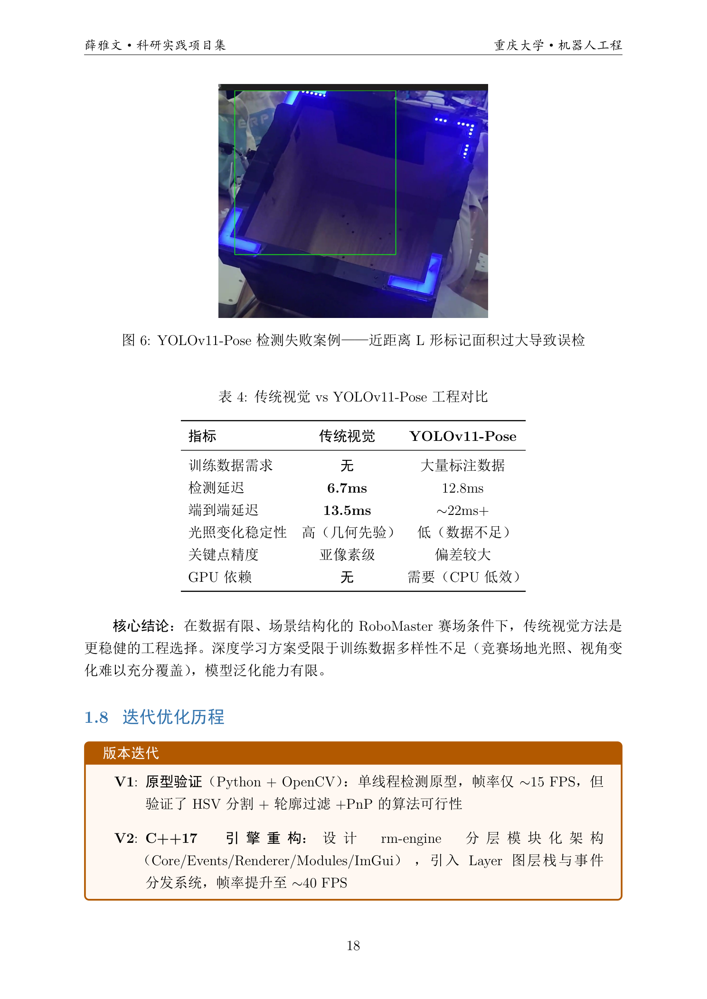
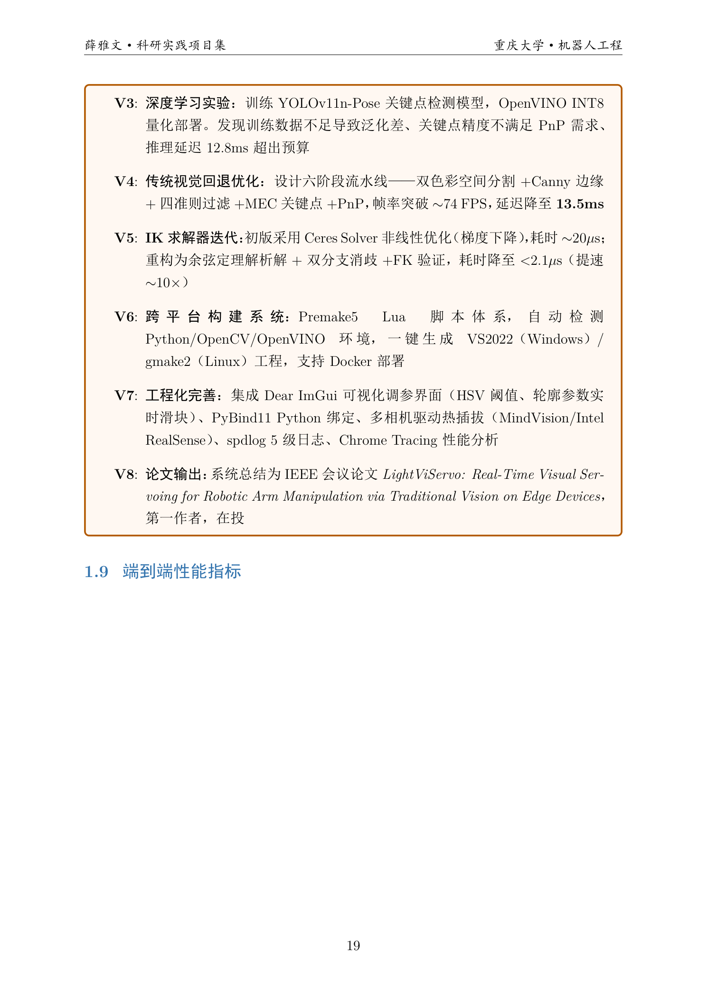
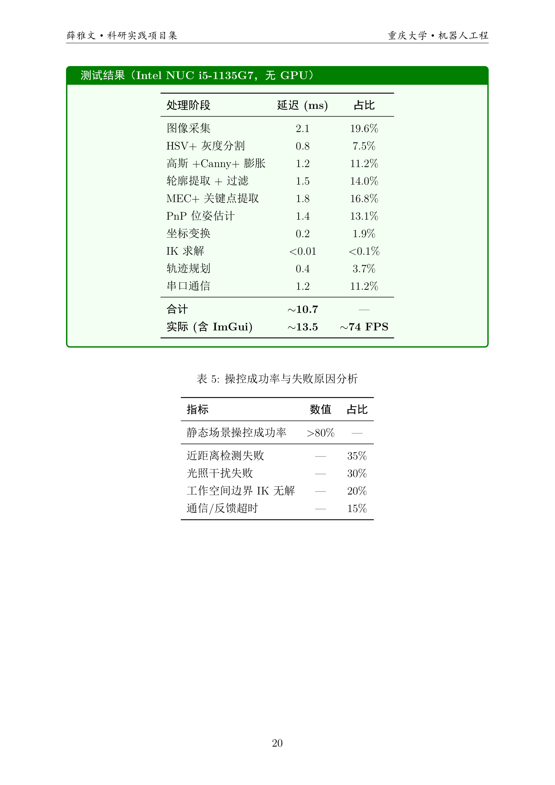
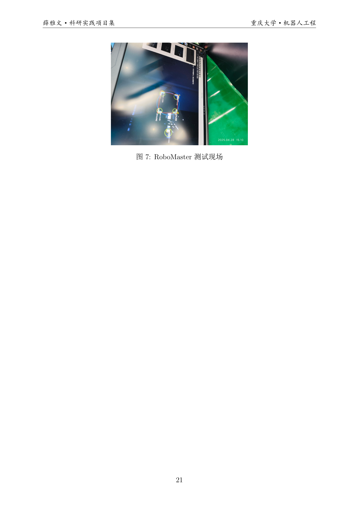
项目视频